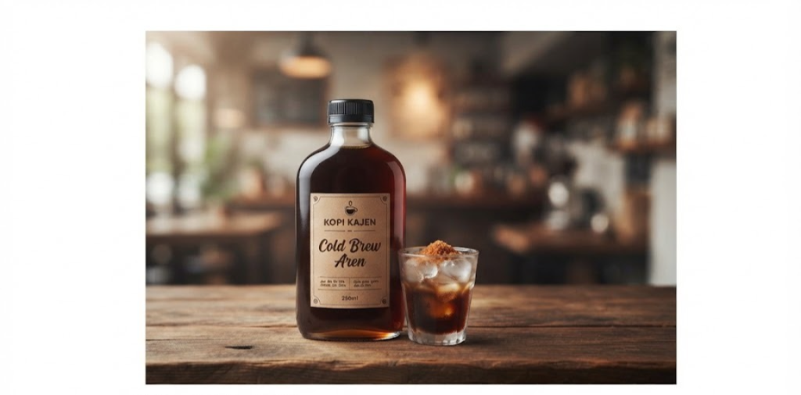

Produk Kopi Kajen
Pilih produk sesuai kebutuhan seduh harian, kantor, atau hadiah.
Visual Produk

Kategori Produk
- Paket seduh rumahan
- Paket kantor mingguan
- Paket tester untuk pelanggan baru
Daftar Harga
| Produk | Ukuran | Stok | Keterangan | Harga |
|---|---|---|---|---|
| Kopi Tubruk Rumah | 250 gram | Tersedia (15) | Rasa klasik dengan aroma kuat | Rp18.000 |
| Cold Brew Aren | Botol 250 ml | Terbatas (5) | Kopi dingin dengan manis aren seimbang | Rp22.000 |
| Kopi Susu Aren | Botol 250 ml | Tersedia (20) | Kopi susu creamy dengan gula aren | Rp20.000 |